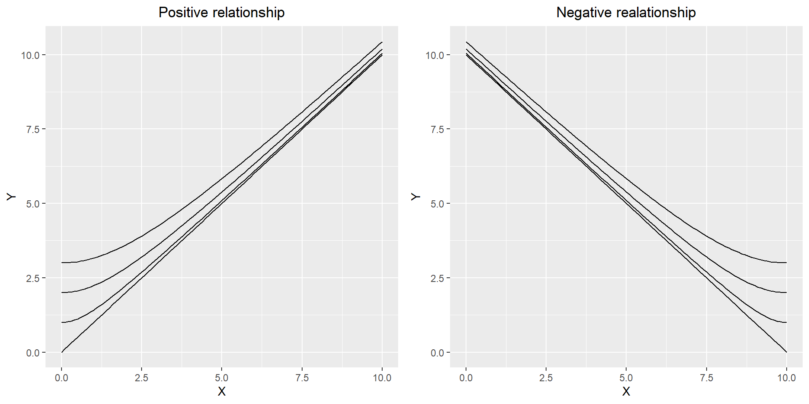
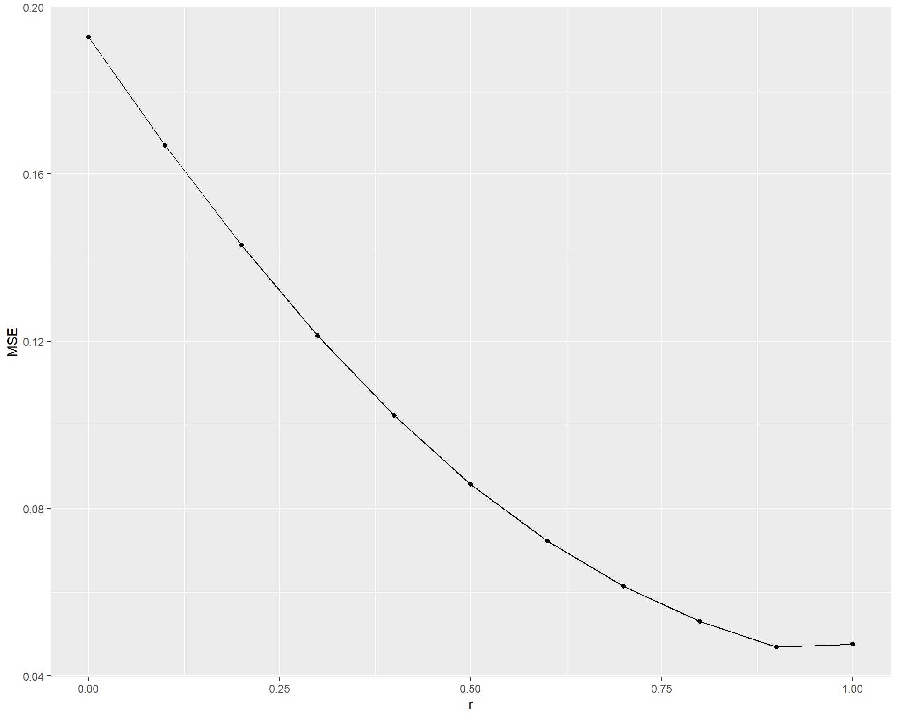

시작하면서
본 내용은 필자가 준비하던 박사논문 선형모형의 다차원공간으로의 확장 의 후속으로 계획했던 내용으로, 선형모형 벡터공간에 허수축(Imaginary Axis) 을 도입, Inverted U-shape 을 선형관계로 재해석하였습니다. 아인슈타인 일반상대성이론의 4차원 시공간 중, 시간을 허수축으로 해석하는 것에서 아이디어를 얻었습니다. 이전 내용 의 요약은 아래 슬라이드를 참고해 주세요.
Abstract
이전 연구 에서 저자는 선형모형을 휘어진 다차원공간으로 확장하여 \(U\)-shaped relationship을 선형모형으로 해석하는 방법을 제시하였는데, Inverted \(U\)-shape은 이 방법으로 표현할 수 없었다. 이에 본 연구에서는 선형모형의 무대를 Imaginary Axis를 포함한 다차원공간까지 확장하여 Inverted \(U\)-shaped relationship을 선형모형으로 해석하는 방법을 제안한다. 본 연구를 활용하여 Health science 연구자들이 새로운 관점에서 연구데이터를 해석할 수 있을 것이다.
keywords : Multidimension, Linear Model, Vector Space, Metric Tensor
Introduction
이전 연구에서 선형모형을 다차원 벡터공간으로 확장한 Multidimensional Vectorized Linear Model(MDVLM)을 제안하였는데, 변수들간의 dependency를 적절하게 조절하여 기존 선형모형에서 정확히 표현하기 어려웠던 관계를 표현할 수 있었다(Jinseob Kim 2017). 특히 MDVLM을 통해 점점 느리게 감소하는 혹은 점점 빠르게 증가하는 모양을 표현할 수 있는데, 이는 MDVLM의 표현식 \(Y^2= \beta_1^2X_1^2 + 2r\beta_1\beta_2X_1X_2+ \beta_2^2X_2^2 = (\beta_1X_1+r\beta_2X_2)^2 + (1-r^2)\beta_2^2X_2^2\)에서 \(X_1\)과 \(Y\)의 관계가 쌍곡선 모양을 보이기 때문이다(Figure 1).
이제 자연스러운 질문이 생긴다. “MDVLM은 점점 빠르게 감소하는 혹은 느리게 증가하는 관계를 표현할 수 있을까?” \(Y^2=X_1^2 - X_2^2\)의 간단한 예를 통해 이를 살펴보도록 하자.
Linear relationship can’t explained via MDVLM
\(Y^2 = X_1^2 - X_2^2\)의 그래프(\(X, Y > 0\))를 살펴보면 \(Y\)와 \(X_2\)는 타원모양(이 예시에서는 원)으로 감소하는 관계를 보이고 MDVLM으로 잘 표현할 수 없다(Figure 2(a)). MDVLM은 직선 혹은 쌍곡선 모양만 표현할 수 있기 때문이다.

즉, \(Y^2 = X_1^2 - X_1^2\) 간단한 표현임에도 불구하고, 선형모형을 벡터공간으로 일반화한 MDVLM으로도 잘 표현될 수 없다. 그렇다면 이것은 선형모형이 아닌 것일까? 분명히 점점 빠르게 감소하는 타원 모양은 선형관계가 아니다. 그러나 \(X_2^2\)이 1 증가할 때 마다 \(Y^2\)가 정확히 1이 감소하는 관계가 있는 것도 사실이다(Figure 2(b)). 이 또한 선형관계라고 할 수 있는 것 아닐까?
이를 확인해 보기 위해 MDVLM에서와 마찬가지로 다차원 벡터공간에서 \(Y^2 = X_1^2 - X_2^2\)을 표현해보자.
\[\vec{Y} = \vec{X_1} + \vec{X_2}\]
\(\vec{X_1}\)와 \(\vec{X_2}\)가 독립된 axis를 갖고 있다면 \(Y^2 = \vec{Y}\cdot\vec{Y} = X_1^2 + X_2^2\)을 얻는다. 한편 \(\vec{X_2}\)가 허수축(imaginar axis)를 갖고 있다고 생각하면 아래와 같이 \(Y^2 = X_1^2 - X_2^2\)을 얻는다.
\[Y^2 = \vec{Y}\cdot\vec{Y} = X_1^2 + (iX_2)^2 = X_1^2 - X_2^2\]
이 경우에도 \(X_1\)이 고정된 상태에서는 \(\vec{Y}\)의 변화량 \(d\vec{Y}= d\vec{X_2}\)가 성립하며, 방향과 허수축을 고려했을 때 \(dY\)와 \(dX_2\)은 선형관계가 있다고 할 수 있다.
허수 \(i\)는 실제로 존재하는 것이 아니지만 \(i^2 = -1\)임을 이용해서 내적이 음수인 허수축을 상상할 수 있고, 선형관계를 허수축을 포함한 벡터공간으로 확장할 수 있다. 허수축의 활용은 물리학에서 많이 볼 수 있는데, 대표적으로 아인슈타인의 특수상대성이론에서는 time coordinate를 허수축으로 두고 4차원 시공간(Minkowski space)에서의 거리 \(ds\)를 아래와 같이 정의한다(Corry 1997).
\[(ds)^2 = (dx)^2 + (dy)^2 + (dz)^2 + (idt)^2 = (dx)^2 + (dy)^2 + (dz)^2 - (dt)^2\]
일반적으로 \(p\)개의 실수축과 \(q\)개의 허수축으로 구성된 manifold를 pseudo-Riemannian manifolds라 하고 거리 \(g\)는 아래와 같이 정의한다(Kulkarni 1981).
\[g = dx_1^2 + \cdots + dx_p^2 - dx_{p+1}^2 - \cdots - dx_{p+q}^2\]
점점 느리게 증가하는 타원모양도 마찬가지로 MDVLM으로는 표현하기 어려우며 \(Y^2 = X_1^2 - (5-X_2)^2\)인 원을 예로 들 수 있다(Figure 3(a), 3(b)).

제안: MDVLM with Imaginary Axis
지금까지의 고찰을 토대로 본 연구에서는 허수축을 포함한 다차원 벡터공간에서 선형관계를 표현하는 MDVLM with Imaginary Axis(MDVLM-IA)를 제안한다. 이것은 기존의 MDVLM에 Imaginary Axis의 개념을 추가하여 일반화한 것인데, MDVLM의 개념을 간단하게 리뷰한 후 여기에 허수축을 추가하여 본 연구의 모형과 추정방법을 설명하겠다. 그 후 몇 가지 example을 통해 이것이 어떻게 활용되는지 살펴볼 것이다.
Formula
이전에 연구했던 MDVLM에 대해 간단히 리뷰를 한 후, 이것을 확장하여 본 연구의 모형과 추정을 설명하도록 하겠다.
Brief Review of MDVLM
음이 아닌 실수 \(Y\)와 \(X_1\), \(X_2\),\(\cdots\), \(X_n\) 들의 선형관계를 벡터공간에서 표현하면 아래와 같다.
\[\vec{Y} = (\beta_1X_1+\beta_{01})\vec{e_1}+ (\beta_2X_2+\beta_{02})\vec{e_2} + \cdots + (\beta_pX_p+\beta_{0p})\vec{e_p}\]
이 때, \(\vec{e_i}\)들은 \(X_i\)방향으로의 단위벡터로서 크기는 모두 1이며, \(X_i\)와 \(X_j\)가 완전히 독립적인 정보라면 \(\vec{e_i}\cdot\vec{e_j} = 0\)이고 일반적으로 \(r_{ij} = r_{ji} = \vec{e_i}\cdot\vec{e_j}\)의 값은 0에서 1까지의 값을 갖는다.
한편 \(\vec{Y}\)의 변화량 \(d\vec{Y}\)는
\[d\vec{Y} = \beta_1dX_1\vec{e_1} + \beta_2dX_2\vec{e_2} + \cdots + \beta_pdX_p\vec{e_p}\]
이며 \(\dfrac{\partial\vec{Y}}{\partial X_i} = \beta_i\vec{e_i}\)가 된다. 이는 \(X_i\)만 변하고 나머지는 고정되어 있을 때 \(\vec{Y}\)는 \(X_i\)의 방향(\(\vec{e_i}\))으로 \(\beta_i\)만큼 증가한다고 해석할 수 있고, 기존의 선형모형의 해석에 vector의 개념만 추가된 것이다.
\(\beta\)값들의 추정은 다음과 같은 스칼라식을 토대로 이루어진다.
\[ \begin{aligned} Y^2 = (\vec{Y})\cdot(\vec{Y}) &= (\sum_{i=1}^{p}(\beta_iX_i+\beta_{i0})\vec{e_i})\cdot (\sum_{i=1}^{p}(\beta_iX_i+\beta_{i0})\vec{e_i}) \\ &=\sum_{i=1}^p(\beta_iX_i+\beta_{i0})^2 + 2\sum_{i<j}r_{ij}(\beta_iX_i+\beta_{i0})(\beta_jX_j+\beta_{j0})\\ \end{aligned} \]
이제 최소제곱추정을 위한 오차제곱의 합(Sum of Squared Error: SSE)을 다음과 같이 정의하면, 기존 선형모형의 최소제곱추정을 자연스럽게 확장한 것이 된다.
\[SSE(\beta) = \sum_{k=1}^N (Y_k - \sqrt{\sum_{i=1}^n(\beta_iX_{ki}+\beta_{i0})^2 + 2\sum_{i<j}r_{ij}(\beta_iX_{ki}+\beta_{i0})(\beta_jX_{kj}+\beta_{j0})})^2\]
(\(Y_k, X_{ki}\): \(k\)th individual’s \(Y, X_{i}\) value)
예를 들어 \(r_{ij}\)가 전부 1이라면 \(SSE(\beta) = \sum_{k=1}^N (Y_k- \beta_0 -\beta_1X_{k1} - \beta_2X_{k2} - \cdots - \beta_pX_{kp})^2\)로 기존 선형모형의 최소제곱추정과 동일한 것을 확인할 수 있다.
\(SSE(\beta)\)를 최소로 하는 \(\beta\)값은 optimization technique를 이용하며, Nelder-Mead, BFGS, CG, L-BFGS-B 등 다양한 방법이 있다Nelder and Mead (1965).
MDVLM with Imaginary Axis
MDVLM에서 허수축을 갖는 \(X_{p+1}\),\(\cdots\),\(X_{p+q}\)를 추가하여 선형관계를 벡터공간에서 표현하면 아래와 같다.
\[\vec{Y} = (\beta_1X_1+\beta_{01})\vec{e_1}+ \cdots + (\beta_pX_p+\beta_{0p})\vec{e_p} + (\beta_{p+1}X_{p+1}+\beta_{0(p+1)})\vec{e_{p+1}} + \cdots + (\beta_{p+q}X_{p+q}+\beta_{0(p+q)})\vec{e_{p+q}}\]
\(\vec{e_1},\cdots,\vec{e_p}\)들은 실수축을 가진 단위벡터로서 자기자신과의 내적값인 \(\vec{e_i}\cdot\vec{e_i}\)의 값이 1 이다. 반면 \(\vec{e_{p+1}},\cdots,\vec{e_{p+q}}\)는 허수축을 가진 단위벡터로서 자기자신과의 내적값은 -1이다. \(1\le i, j \le p\)일 때는 \(r_{ij} = r_{ji} = \vec{e_i}\cdot\vec{e_j}\)가 0에서 1까지의 값을 갖으며, \(p+1\le i, j \le p+q\)라면 -1에서 0까지의 값을 갖고, 그 외에는 \(r_{ij}=0\)이다. 즉 Axis들의 dependency는 실수축끼리, 혹은 허수축끼리만 정의한다.
\(\vec{Y}\)의 변화량 \(d\vec{Y}\)는
\[d\vec{Y} = \beta_1dX_1\vec{e_1} + \cdots + \beta_pdX_p\vec{e_p} + \beta_{p+1}dX_{p+1}\vec{e_{p+1}} + \cdots + \beta_{p+q}dX_{p+q}\vec{e_{p+q}}\]
이며 \(\dfrac{\partial\vec{Y}}{\partial X_i} = \beta_i\vec{e_i}\)가 된다. 이는 \(X_i\)만 변하고 나머지는 고정되어 있을 때 \(\vec{Y}\)는 \(X_i\)의 방향(\(\vec{e_i}\))으로 \(\beta_i\)만큼 증가한다고 해석할 수 있고 이는 MDVLM에서의 해석과 동일하다.
추정을 위한 스칼라 관계식은 MDVLM때와 비슷하게 아래와 같이 표현할 수 있다.
$$ \[\begin{aligned} Y^2 &= (\sum_{i=1}^{p}(\beta_iX_i+\beta_{0i})\vec{e_i} + \sum_{i=p+1}^{p+q}(\beta_iX_i+\beta_{0i})\vec{e_i})\cdot (\sum_{i=1}^{p}(\beta_iX_i+\beta_{0i})\vec{e_i} + \sum_{i=p+1}^{p+q}(\beta_iX_i+\beta_{0i})\vec{e_i}) \\ &=(\sum_{i=1}^p(\beta_iX_i+\beta_{0i})^2 + \sum_{1\le i<j \le p}2r_{ij}(\beta_iX_i+\beta_{0i})(\beta_jX_j+\beta_{0j})) - (\sum_{i=p+1}^{p+q}(\beta_iX_i+\beta_{0i})^2 + \sum_{p< i<j\le p+q}2r_{ij}(\beta_iX_i+\beta_{0i})(\beta_jX_j+\beta_{0j}))\\ \end{aligned}\]\[ $Y$의 값의 변화량 $dY$는 \]
\[\begin{aligned} (dY)^2 &= (\sum_{i=1}^{p}\beta_idX_i\vec{e_i} + \sum_{i=p+1}^{p+q}\beta_idX_i\vec{e_i})\cdot (\sum_{i=1}^{p}\beta_idX_i\vec{e_i} + \sum_{i=p+1}^{p+q}\beta_idX_i\vec{e_i}) \\ &=(\sum_{i=1}^p\beta_i^2(dX_i)^2 + \sum_{1 \le i<j \le p}2r_{ij}\beta_i\beta_jdX_idX_j) - (\sum_{i=p+1}^{p+q}\beta_i^2(dX_i)^2 + \sum_{p < i<j \le p+q}2r_{ij}\beta_i\beta_jdX_idX_j)\\ \end{aligned}\]$$
이고, 모든 \(r_{ij}\)들이 0이라면 \(\sum_{i=1}^p\beta_i^2(dX_i)^2 - \sum_{i=p+1}^{p+q}\beta_i^2(dX_i)^2\)로 간단히 표현할 수 있다.
최소제곱 추정을 위한 \(SSE(\beta)\)값도 비슷하게 정의할 수 있으며 추정방법은 MDVLM의 경우와 같이 optimization technique를 이용한다.
\[ \begin{aligned} f(\beta,X_k) &= (\sum_{i=1}^p(\beta_iX_{ki}+\beta_{0i})^2 + \sum_{1\le i<j \le p}2r_{ij}(\beta_iX_{ki}+\beta_{0i})(\beta_jX_{kj}+\beta_{0j})) - (\sum_{i=p+1}^{p+q}(\beta_iX_{ki}+\beta_{0i})^2 + \sum_{p< i<j\le p+q}2r_{ij}(\beta_iX_{ki}+\beta_{0i})(\beta_jX_{kj}+\beta_{0j})) \\ SSE(\beta) &= \sum_{k=1}^N (Y_k - \sqrt{f(\beta,X_k)})^2 \end{aligned} \]
(\(Y_k, X_{ki}\): \(k\)th individual’s \(Y, X_{i}\) value, \(X_k= (X_{k1},\cdots,X_{k(p+q)})\))
Apply to Data
앞서 언급했던 \(Y^2 = X_1^2 - X_2^2\)과 \(Y^2 = X_1^2 - (5-X_2)^2\)인 경우의 데이터에 적용해보도록 하겠다. 모든 계산은 R 3.3.3의 optim 함수를 이용하였다.
Example 1: \(Y^2 = X_1^2 - X_2^2\)
\(Y^2 = X_1^2 - X_2^2\)인 양수 \(Y, X_1, X_2\)의 쌍을 100번 random sampling 해서 MDVLM과 본 연구의 모형을 비교해 보았다.

| Best Scenario of MDVLM | MDVLM-IA | |
|---|---|---|
| Formula | \(Y^2 = (-0.224 + 1.163X_1 -0.634X_2)^2\) | \(Y^2 = X_1^2 -X_2^2\) |
| MSE | 0.176 | 0 |
실제로 \(Y^2\)과 \(X_1^2, X_2^2\)의 값을 이용해서 선형모형으로 추정하면 정확한 추정 결과를 얻는다. 그러나 제곱한 값이 아닌 원래값을 이용해서 선형모형에 적용하면 \(Y =\) \(-0.224\) \(+\) \(1.163\) \(X_1 +\) \(-0.634\) \(X_2\)이 되어 정확한 추정을 얻지 못하고, MDVLM으로 확장해도 이보다 정확한 추정은 얻을 수 없다.
Example 2: \(Y^2 = X_1^2 - (5-X_2)^2\)

| Best Scenario of MDVLM | MDVLM-IA | |
|---|---|---|
| Formula | \(Y^2 = (-2.78 + 1.079X_1 + 0.567X_2)^2\) | \(Y^2 = X_1^2 - (5-X_2)^2\) |
| MSE | 0.047 | 0 |
Discussion
예상대로 \(Y\)가 빨리 감소하거나 천천히 증가하는 타원모양의 관계는 MDVLM으로 잘 표현할 수 없었으며, 허수축을 활용했을 때 정확히 표현할 수 있었다.
본 연구가 Health Status를 설명하기 위해 처음으로 허수 \(i\)의 개념을 이용하였다는 의의가 있다. 본 연구에서는 \(i^2 = -1\)이라는 특징을 이용해서 타원모양을 허수축에서의 선형관계로 재해석하여 MDVLM보다 더 확장된 선형모형을 제시하였는데, 이를 통해 연구자들이 선형관계라는 직관적 해석을 잃지 않으면서 지금보다 훨씬 다양하게 건강현상을 설명할 수 있을 것이라 확신한다.
허수 \(i\)의 또하나의 큰 특징은 복소수 표현을 통해 실수체계를 확장할 수 있다는 것인데, 이것을 적극적으로 활용한 분야 중 하나가 양자역학이다. 양자역학의 대표적인 방정식인 슈뢰딩거 방정식(Schrödinger equation)은 입자의 운동은 확률로 기술되고 그 확률은 파동처럼 행동한다는 내용인데 파동을 기술하는 함수가 복소수로 표현되어 있다는 것이 특징이며, 복소수가 포함된 파동함수 그 자체로는 실제 세계를 해석하기 어렵지만 켤레복소수와의 곱을 통해 확률을 표현할 수 있다. 양자역학이 미시세계의 현상을 설명하는 새로운 방법이 된 것과 마찬가지로 확률을 복소수를 포함한 파동함수로 표현하는 방법이 향후 Health science에서 건강상태를 설명하는 새로운 방법이 될 수 있을 것이라 예상한다.
본 연구를 시작으로 향후 Health science에서 복소수를 활용한 모형이 활발히 제안되길 기대한다.
Byrd, Richard H, Peihuang Lu, Jorge Nocedal, and Ciyou Zhu. 1995. “A Limited Memory Algorithm for Bound Constrained Optimization.” SIAM Journal on Scientific Computing 16 (5): 1190–1208.
Corry, Leo. 1997. “Hermann Minkowski and the Postulate of Relativity.” Archive for History of Exact Sciences 51 (4): 273–314.
Fletcher, Reeves, and Colin M Reeves. 1964. “Function Minimization by Conjugate Gradients.” The Computer Journal 7 (2): 149–54.
Jinseob Kim, Joohon Sung. 2017. “Multidimensional Vectorized Linear Model: Linear Model in Multidimensional Vector Space.” Unpublish.
Kulkarni, Ravi S. 1981. “Proper Actions and Pseudo—Riemannian Space Forms.” Advances in Mathematics 40 (1): 10–51.
Nelder, John A, and Roger Mead. 1965. “A Simplex Method for Function Minimization.” The Computer Journal 7 (4): 308–13.
Byrd, Richard H, Peihuang Lu, Jorge Nocedal, and Ciyou Zhu. 1995. “A Limited Memory Algorithm for Bound Constrained Optimization.” SIAM Journal on Scientific Computing 16 (5): 1190–1208.
Corry, Leo. 1997. “Hermann Minkowski and the Postulate of Relativity.” Archive for History of Exact Sciences 51 (4): 273–314.
Fletcher, Reeves, and Colin M Reeves. 1964. “Function Minimization by Conjugate Gradients.” The Computer Journal 7 (2): 149–54.
Jinseob Kim, Joohon Sung. 2017. “Multidimensional Vectorized Linear Model: Linear Model in Multidimensional Vector Space.” Unpublish.
Kulkarni, Ravi S. 1981. “Proper Actions and Pseudo—Riemannian Space Forms.” Advances in Mathematics 40 (1): 10–51.
Nelder, John A, and Roger Mead. 1965. “A Simplex Method for Function Minimization.” The Computer Journal 7 (4): 308–13.
Citation
BibTeX citation:
@online{kim2019,
author = {Jinseob Kim},
title = {선형모형의 {다차원공간으로의} {확장(2):} {허수축} {도입}},
date = {08/14/2019},
url = {https://blog.zarathu.com/posts/2019-08-14-mdlmwithimaginaryaxes/mdlmwithimaginaryaxes.html},
langid = {en}
}
For attribution, please cite this work as:
Jinseob Kim. 8AD–14AD. “선형모형의 다차원공간으로의 확장(2):
허수축 도입.” 8AD–14AD. https://blog.zarathu.com/posts/2019-08-14-mdlmwithimaginaryaxes/mdlmwithimaginaryaxes.html.